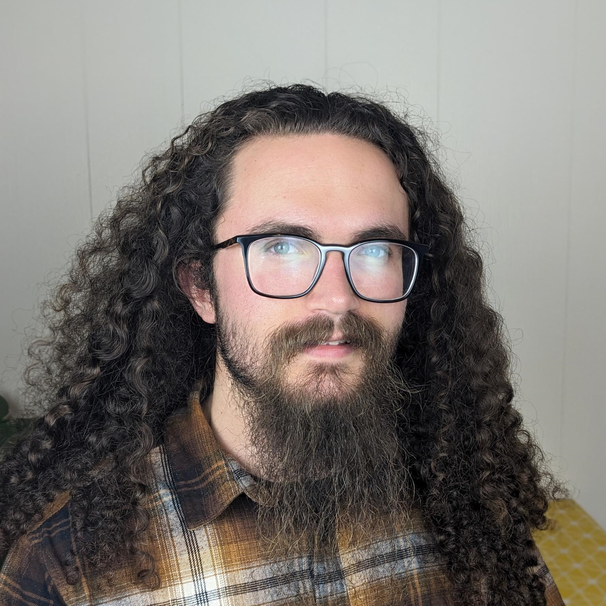

About Me

Hi! My name is Keaton. I like to make things—music, art, games, tools, just about anything—especially when it involves learning new skills and getting creative. I've spent the last 3 years honing my skills as a programmer, building and breaking things, day after day.
From 2021, I cut my teeth on tens of automation projects written in Google Apps Script and Python, and a handful of courses through Coursera and Udemy. In June of 2023 I started a part-time software engineering bootcamp, Hack Reactor at Galvanize. During that time, I participated in the Hackathon at Candid Co. and helped program Google Drive API Clients in both Python and JavaScript. Our team even won the People's Choice Award.
After 4 months of dedicating 20+ hours weekly to the bootcamp, I logged in one day to find the program had been entirely and unceremoniously cancelled. Though this was disheartening, I found some relief in having confidently learned two thirds of the bootcamp's content. Now I'm beginning a software engineering apprenticeship, and continuing to steadily build steam!
What I'm Up To
Right now, I'm working on a couple of personal/side projects:
- The new Fairfield County Strings and Keyboards website, created using React with TypeScript and the Google Drive and Calendar APIs
- A horror video game project, built by myself and 3 others, using Godot and GDScript